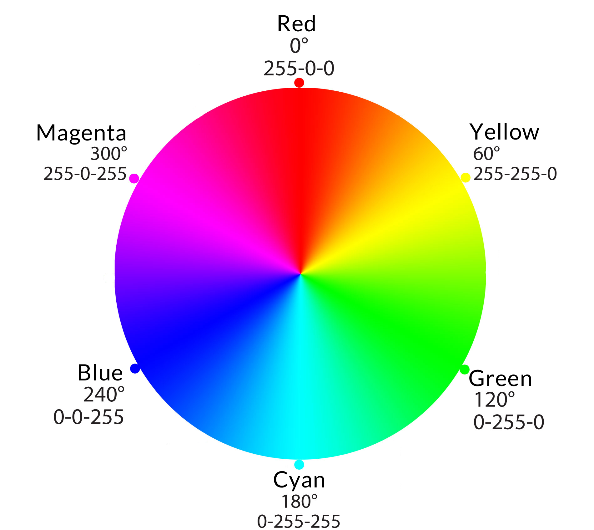
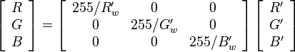
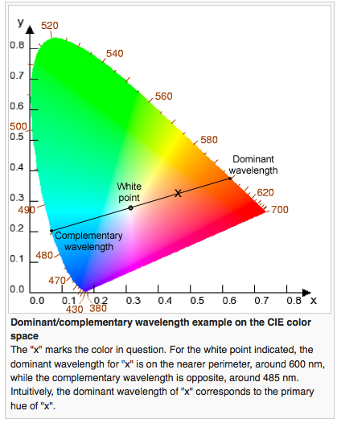

Color + Tint
[[[Interactive demonstration of color adjustment]]]
Color is relative. Any change in color impacts the overall color balance in an image. Color is a balance because it is made up of multiple related components. For example, if the amount of red is increased in an image, it has the effect of diminishing the relative amount of green and blue. To increase the amount of red in an image, you can either increase the amount of red or decrease the amounts of green and blue. Color adjustment can therefore be achieved in two ways: 1. Increasing the amount of the desired color or 2. Decreasing the amount of the desired color’s complement.
A color wheel helps in color correction because it demonstrates the relationships between colors. Complementary colors are directly across from each other on the color wheel.
The primary colors are red, green, and blue. The combination of 256 levels of each of these produces 256^3 or 16777216 possible colors. In reality, the computer screen does not support each of these. The pure secondary colors are yellow, magenta, and cyan. Each secondary color is created from a mixture of two of the three primary colors at full strength.
As you can see, the complements of each of the primary (red, green, and blue) colors are the secondary colors (cyan, magenta, and yellow). This makes for simple color correction. To adjust red, green, or blue, simply increase or decrease that channel. The secondary approach would be to decrease or increase the level of its complement. To adjust cyan, magenta, or yellow, simply increase or decrease (the opposite or the desired adjustment, remember, because you’re adjusting the complement) its complement. The easy thing about this technique is even if you can’t adjust the primary slider, the secondary slider is only made up of two primary colors, so you still only have to adjust two sliders.
Sliders v. Math
Instead of sliding a slider to adjust the color level, you can also scale the RGB value (multiply it by a constant):
where R’w, G’w, and B’w are the RGB values of a pixel that is believed to be white. Color balance is also called white balance, because it is often easiest to correct image color based off of neutrals. The above matrix multiplication rotates the RGB values by an angle that brings each of the values to their “neutral”, or non-tinted (ideally) state. Color is all about balance.
II. Blue/ Yellow (primary) and red/ green (secondary) axes wrt chromacity diagram.
White Balance
White balance of an image pinpoints what colors are neutral (white, black and grey) in an image. The color of an image can be plotted on a chromacity diagram that measures the amounts of blue, green and red light in a color. The chromacity diagram can help with color correction because of the appearance of two main axes: the yellow/ blue main axis and the green/ magenta perpendicular (secondary) axis. In adjusting color temperature, the main adjustment is along a scale ranging from blue to orange. This corresponds to the overall temperature of light, otherwise known as the kelvin scale. The secondary axis, ranging from green to magenta, relates mostly to color management (ie. The camera color settings or the post-processing color profile), as well as certain lighting situations such as neon or fluorescent light. Gas-emitting lights tend to lie on the magenta/ green scale rather than the kelvin scale. Magenta/ green correction comes secondary to the main color balance, but can help dial in the color correction. Different cameras handle colors differently: for example, canon cameras tend to produce images with slightly more magenta than do Nikon images, which tend to be a bit cooler.
The chromacity diagram unites the three tri-stimulus values (red, green, blue) corresponding to each of the stimulus values that cones are sensitive to. It maps the colors based on their...
Source: Wikipedia
Wavelengths of light: 450nm – 770nm
The human eye can see light in the range of 450nm to 770 nm. This corresponds to blue to red light. The dominant wavelength of light in an image is the value that is associated with:
Dominant wavelength
http://en.wikipedia.org/wiki/Dominant_wavelength